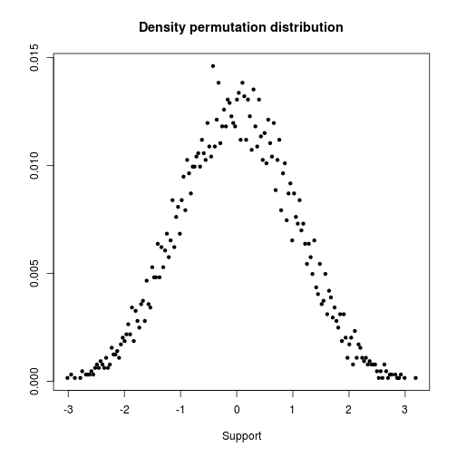
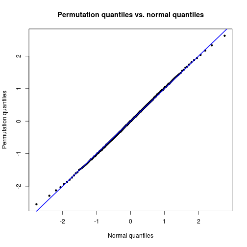
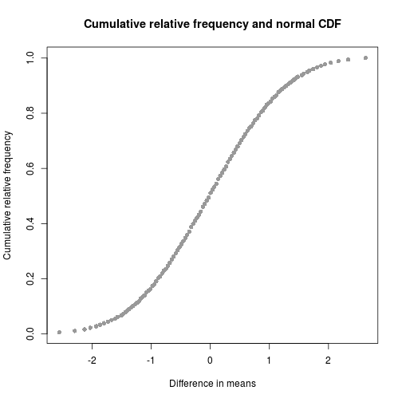

Permutation tests
TODO
- link to combinatorics
Install required packages
wants <- c("coin", "e1071")
has <- wants %in% rownames(installed.packages())
if(any(!has)) install.packages(wants[!has])Two-sample \(t\)-test / one-way ANOVA for independent groups
Not limited to just two independent samples.
Using package coin
set.seed(123)
Nj <- c(7, 8)
sigma <- 20
DVa <- round(rnorm(Nj[1], 100, sigma))
DVb <- round(rnorm(Nj[2], 110, sigma))
tIndDf <- data.frame(DV=c(DVa, DVb),
IV=factor(rep(c("A", "B"), Nj)))library(coin)
(ot <- oneway_test(DV ~ IV, alternative="less", data=tIndDf, distribution="exact"))
Exact 2-Sample Permutation Test
data: DV by IV (A, B)
Z = 0.1356, p-value = 0.5602
alternative hypothesis: true mu is less than 0Compare with parametric \(t\)-test
tRes <- t.test(DV ~ IV, alternative="less", var.equal=TRUE, data=tIndDf)
tRes$p.value[1] 0.5510091Manual exact test
idx <- seq(along=tIndDf$DV)
idxA <- combn(idx, Nj[1])
getDM <- function(x) { mean(tIndDf$DV[!(idx %in% x)]) - mean(tIndDf$DV[x]) }
resDM <- apply(idxA, 2, getDM)
diffM <- diff(tapply(tIndDf$DV, tIndDf$IV, mean))
# don't use <= because of floating point arithmetic problems
DMstar <- apply(idxA, 2, getDM)
DMbase <- mean(DVa) - mean(DVb)
tol <- .Machine$double.eps^0.5
DMsIsLEQ <- (DMstar < DMbase) | (abs(DMstar-DMbase) < tol)
(pVal <- sum(DMsIsLEQ) / length(DMstar))[1] 0.55338Diagram: permutation distribution
Check density of permutation distribution.
supp <- support(ot)
dens <- sapply(supp, dperm, object=ot)
plot(supp, dens, xlab="Support", ylab=NA, pch=20, main="Density permutation distribution")
QQ-plot against standard normal distribution.
qEmp <- sapply(ppoints(supp), qperm, object=ot)
qqnorm(qEmp, xlab="Normal quantiles", ylab="Permutation quantiles",
pch=20, main="Permutation quantiles vs. normal quantiles")
abline(a=0, b=1, lwd=2, col="blue")
Empirical cumulative distribution function.
plot(qEmp, ecdf(qEmp)(qEmp), col="gray60", pch=16,
xlab="Difference in means", ylab="Cumulative relative frequency",
main="Cumulative relative frequency and normal CDF")
Two-sample \(t\)-test / one-way ANOVA for dependent groups
Not limited to just two dependent samples.
Using package coin
N <- 12
id <- factor(rep(1:N, times=2))
DVpre <- rnorm(N, 100, 20)
DVpost <- rnorm(N, 110, 20)
tDepDf <- data.frame(DV=c(DVpre, DVpost),
IV=factor(rep(0:1, each=N), labels=c("pre", "post")))library(coin)
oneway_test(DV ~ IV | id, alternative="less", distribution=approximate(B=9999), data=tDepDf)
Approximative 2-Sample Permutation Test
data: DV by IV (pre, post)
stratified by id
Z = -2.1232, p-value = 0.0138
alternative hypothesis: true mu is less than 0t.test(DV ~ IV, alternative="less", paired=TRUE, data=tDepDf)$p.value[1] 0.0129621Manual exact test
DVd <- DVpre - DVpost
sgnLst <- lapply(numeric(N), function(x) { c(-1, 1) } )
sgnMat <- data.matrix(expand.grid(sgnLst))
getMD <- function(x) { mean(abs(DVd) * x) }
MDstar <- apply(sgnMat, 1, getMD)
MDbase <- mean(DVd)
# don't use <= because of floating point arithmetic problems
tol <- .Machine$double.eps^0.5
MDsIsLEQ <- (MDstar < MDbase) | (abs(MDstar-MDbase) < tol)
(pVal <- sum(MDsIsLEQ) / length(MDstar))[1] 0.01391602Independence of two variables
Fisher’s exact test
Nf <- 8
DV1 <- rbinom(Nf, size=1, prob=0.5)
DV2 <- rbinom(Nf, size=1, prob=0.5)
fisher.test(DV1, DV2, alternative="greater")$p.value[1] 0.6428571Manual exact test
library(e1071)
permIdx <- permutations(Nf)
getAgree <- function(idx) { sum(diag(table(DV1, DV2[idx]))) }
resAgree <- apply(permIdx, 1, getAgree)
agree12 <- sum(diag(table(DV1, DV2)))
(pVal <- sum(resAgree >= agree12) / length(resAgree))[1] 0.6428571Useful packages
Packages resample and vegan provide more ways to implement flexible permutation strategies for various designs.
Detach (automatically) loaded packages (if possible)
try(detach(package:e1071))
try(detach(package:coin))
try(detach(package:survival))
try(detach(package:splines))Get the article source from GitHub
R markdown - markdown - R code - all posts